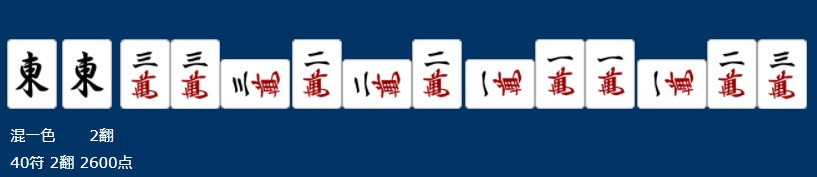

手牌入力の仕方
例
z1z1-,m1-23,m111-,m222=,m333+

"m"=萬子
"p"=筒子
"s"=索子
"z"=字牌
","=鳴いた組み合わせを分ける
"-"=上家の打牌を鳴く
"="=対面の打牌を鳴く
"+"=下家の打牌を鳴く
ツモもしくはロン牌は頭文字を他の手牌と分ける
ロンの場合、鳴きと同様にロン牌の後ろに+=-を付けてください
入力
入力者は固定し、入力者の自風を常に変化させてから点数に反映するように注意してください。
ゲームを始めるときは入力のStartにチェックを入れてください。